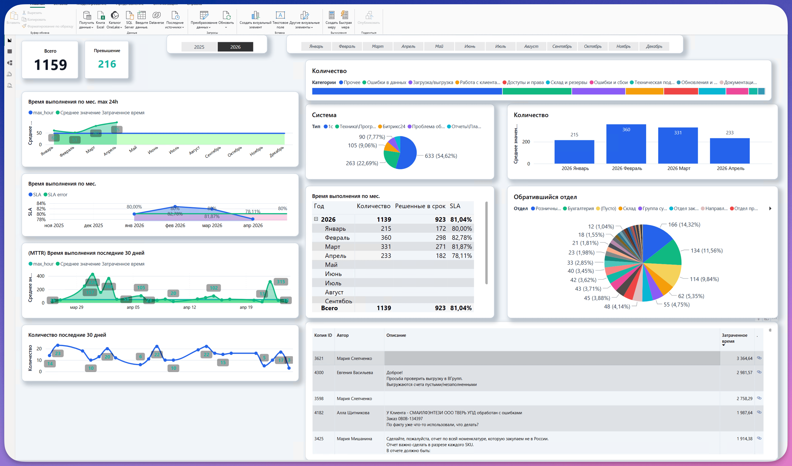

Всего
1159
обращений на дашборде
Основной фокус: ABC-клиенты в 1С, старт тестирования складского размещения, сайт и операционная поддержка. Текст сокращен, акцент на метриках и визуальных блоках.
Главный вывод
SLA держится около 81%, но апрель просел до 78,11%
Нужен контроль длинных задач и быстрые решения по складу, сайту и правилам ABC.
Контрольные точки
4
обратная связь склада, макет сайта, digital-специалист, SLA-долги
Всего
1159
обращений на дашборде
Превышение
216
заявок выше SLA
SLA
81,04%
общий показатель
В срок
923
решено в SLA-таблице
Апрель
233
заявки за месяц
1С
54,62%
основной источник
ABC / 1C
Закрыт базовый этап, выполнены ключевые доработки по пересчету и загрузке клиентов.
Склад
Тестовая команда выделена, база разработки выдана, собираем обратную связь до 15 мая.
Сайт
Критичные ошибки старого сайта закрыты, макет по референсам будет готов на неделе.
Bitrix24
Прорабатывается связка 1С → Bitrix24 для клиентов в проработке и учебного центра.
Операционные метрики
Январь-апрель 2026
Основная нагрузка остается в 1С
Топ по количеству обращений
Большой вклад в просадку SLA и MTTR
| ID | Автор | Тема | Время |
|---|---|---|---|
| 3621 | Мария Слепченко | долгая задача без описания на скрине | 3364,64 |
| 4300 | Евгения Васильева | пустые / незаполненные счета при выгрузке | 2981,57 |
| 3598 | Мария Слепченко | долгая задача без описания на скрине | 2758,29 |
| 4182 | Алла Щитникова | УПД обработан с ошибками | 1987,64 |
| 3425 | Мария Мишанина | отчет по закупаемой не в России номенклатуре | 1914,38 |

Работа отдела
1С / ERP
CRM / Bitrix24
Склад / логистика
Сайт
Учебный центр
Инфраструктура
Ключевой проект
Клиенты без категории = класс C
Это влияет на ограничения заказа и правила доставки.
Заказы считаются за день суммарно
Если клиент делает несколько заказов, логика должна учитывать общий дневной объем.
Нужна сверка до запуска
Отчет должен показать будущие категории до массовой замены данных.
Ключевой проект
Компактная версия для встречи
Ключевой проект
Старый сайт
Критичные ошибки закрыты
Новый сайт
Счет и лицензия запрошены
Макет
Готовится, будет на неделе
Учебный центр
Оплата и Bitrix24 протестированы
Оплата шаблона и лицензии
Блокер для полноценной визуальной сборки.
Макет нового сайта
Разработчик готовит визуальную основу по референсам, готовность ожидается на неделе.
Digital-специалист
Нужен для рисования схем процессов нового сайта.
Визуальная часть учебного центра
Функциональные тесты оплаты и записи завершены.
Для встречи
1
Собрать и обработать обратную связь по размещению до 15 мая.
2
Получить макет по референсам на неделе и подключить digital-специалиста к схемам процессов.
3
Зафиксировать правила по C-клиентам, сумме заказа и предоплате.
4
Разобрать топ долгих задач, чтобы вернуть апрель выше 80%.